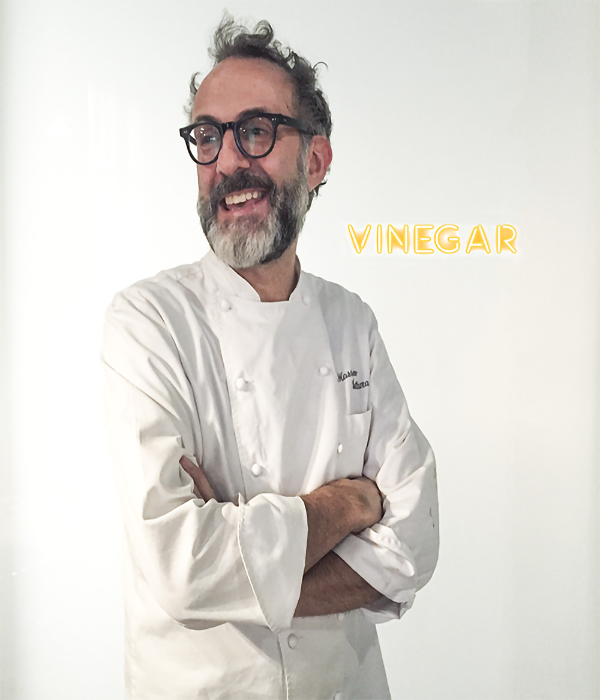

Click on the boxes below:
A popular celebrity chef in the UK, Marcus Wareing trained under the likes of Albert Roux and Gordon Ramsay. Excelling and branching out on his own, he now boasts 4 restaurants to choose from in London. Catering to all tastes and budgets, you can experience Michelin-starred dining at Marcus or casual comfort food heaven at Tredwell’s in Covent Garden. Marcus Wareing is often a judge for Great British Menu and has succeeded Michel Roux Jr as judge for Masterchef The Professionals.
Chef patron of Osteria Francescana boasts 3 Michelin stars and can be found in Modena, Italy. It has been listed in the top 5 of The World’s 50 Best Restaurants since 2010. Bottura has worked with Alain Ducasse, and not long after opening Osteria Francescana, he spent a summer at El Bulli with Ferran Adrià. In 2011, he opened Franceschetta 58 with Marta Pulini: a more casual dining experience which even offers a buffet lunch with an “all you can eat” format. Bottura is known internationally and greatly admired by colleagues and clients alike.
Michel Roux Jr runs the two Michelin-starred restaurant Le Gavroche, and this year celebrates 25 years at the helm. Michel has become well known on TV presenting cooking shows like Masterchef; he is involved in charities and also become involved in an underground farm that grows sustainable, fresh micro greens and salad leaves. His daughter Emily can now be found in the kitchen at Le Gavroche, guaranteeing the continuation of the Roux legacy.